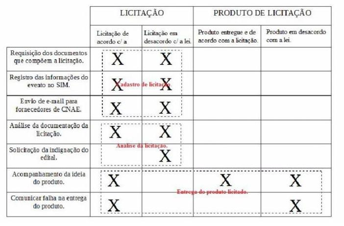
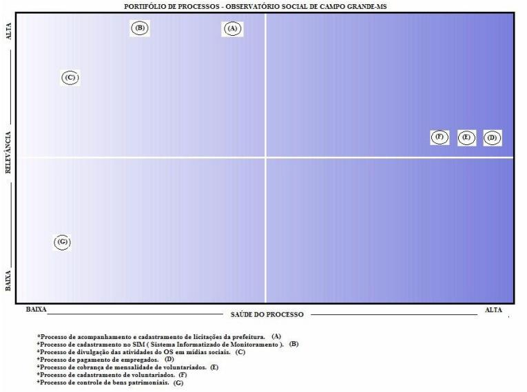
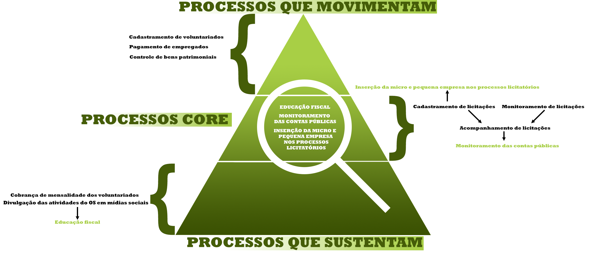

Fase 01
Arquitetura de Processos da organização, a Avaliação dos Processos de Negócios, e o Escopo do Ciclo de Melhorias.
Documentos
ATA - Reunião de Reconhecimento do Processo
Aos 28 dias do mês de fevereiro de dois mil e dezesseis, as 15:00h, na sala reservada para o Observatório Social de Campo Grande, localizado na Associação Comercial de Campo Grande, iniciou-se a reunião de monitoria e acompanhamento do projeto de melhoria de processos de negócios, executado pelos alunos do segundo grupo da primeira turma do curso de Modelagem de Processos de Negócio, matéria do curso acadêmico de Análise de Sistemas na Universidade Federal de Mato Grosso do Sul. A reunião foi presidida pelo vice-presidente do Observatório Social de Campo Grande, Hélio Toshiaki, e registrada por mim, Felipe Chulli Lopes. A reunião contou com a presença dos alunos do projeto e um membro do Observatório Social de Campo Grande.
Dentre a pauta, o que é o Observatório Social, sua atuação e responsabilidade social e seu Modus Operandi.
Os alunos do projeto informaram ao vice-presidente a finalidade do projeto e como poderia vir a ser útil para o Observatório Social, tendo os mesmos recebido como resposta o questionamento sobre a forma com que o projeto seria executado. O aluno Pedro Henrique anunciou que seria executado em 4 fases, onde cada uma necessitaria de uma reunião específica para a solução dos seus respectivos objetivos.
Foi questionado pelos alunos do projeto a definição do Observatório Social, tendo recebido como resposta do vice-presidente que o Observatório Social é uma instituição privada sem fins lucrativos que busca, acima de tudo, tornar a fiscalização do dinheiro público corriqueira em nossa sociedade, mas como não é algo que ocorre da noite para o dia, o Observatório promove a educação fiscal e é ele quem efetua o controle social das contas públicas e informa ao responsável pela fiscalização eventuais irregularidades detectadas ou na forma da lei efetua denúncia ao legislativo/ministério público.
Foi colocado pelos alunos a forma com que o Observatório Social realiza tal fiscalização. O vice-presidente explicou que existe um processo responsável por cadastrar todas as licitações da prefeitura em um aplicativo S.I.M., e que o Observatório Social participa, como observadores, dos pregões até a entrega dos produtos. Também foi questionado pelo aluno Alison quais eram os outros processos responsáveis pela mobilização do Observatório Social, tendo como resposta uma lista de processos pertinentes.
Por fim, o vice-presidente foi questionado sobre a atuação do Observatório Social na sociedade, onde o mesmo listou 4 responsabilidades sociais.
Nada mais a tratar, foi encerrada a reunião.
Estiveram presentes:
Conselho administrativo do Observatório Social:Alunos do projeto de melhoria de processos de negócio:
- Hélio Toshiaki
- Felipe Chulli
- Hélio Hisao
- Luis Rodrigo
- Murilo Lobo
- Pedro Felipe
- Pedro Henrique
- Rafael Araújo
- Rodrigo Lescano
- Willian Marotzki
Identificação de Processo
Processos Gerais do OSCG - Observatório Social de Campo Grande:Processo de Acompanhamento e Cadastramento de Licitações da Prefeitura:
- Processo de acompanhamento e cadastramento de licitações da prefeitura;
- Processo de cadastramento de voluntariados;
- Processo de cobrança de mensalidade de voluntariados;
- Processo de pagamento de empregados;
- Processo de divulgação das atividades do OS em mídias sociais;
- Processo de cadastramento no SIM ( Sistema Informatizado de Monitoramento ); e
- Processo de controle de bens patrimoniais.
Para cadastrar uma licitação primeiramente são requisitados os documentos que compõem o processo licitatório ( edital, termo de referência e formulários e proposta ). A partir do recebimento, é feito um registro das informações relativas ao evento, tais como data, valores e número do processo, no aplicativo SIM ( Sistema Informatizado de Monitoramento ). O aplicativo expede um email aos fornecedores vinculados ao código CNAE (Classificação Nacional de Atividades Econômicas ) do produto que está sendo adquirido pela prefeitura para que ele possa analisar eventual interesse em vender. Em seguida, é mobilizada uma equipe para analisar as informações relativas as documentações recebidas para verificar se estão de acordo com a lei. Se não estiverem, é necessário, dentro do prazo legal ( 2 dias ), efetuar uma solicitação de indignação do edital, se estiverem, determina-se a presença de uma equipe para participar do certame na data e hora programadas no edital. Após serem definidos os vencedores do pregão, é necessário esperar a homologação da compra pelo prefeito e aguardar o prazo da entrega do produto e acompanhar a sua entrega para conferir se o produto que está sendo entregue é o mesmo solicitado. Se não for, é comunicado a um gestor sobre a falha para providências cabíveis.
Possíveis melhorias:
- Melhoria no processo de divulgação das atividades do OS, uma vez que as empresas serão encorajadas a registrar um CNAE, seu email será cadastrado no aplicativo SIM e receberá, do OS, um email caso seu tipo de serviço ou produto esteja sendo procurado em alguma licitação municipal. Por conseguinte, mais empresas estarão dispostas a vender para a prefeitura, promovendo uma concorrência maior, e, por consequência, menores preços.
Funções ou Atuações do Observatório:Todas atuações que beneficiam a sociedade, decomposta em governo, empresas e cidadãos.
- Monitoramento das compras públicas municipais;
- Educação fiscal;
- Inserção da micro e pequena empresa nos processos licitatórios;
- Dinamização dos conselhos regionais.
Matriz Caso/Função - Observatório Social de Campo Grande - MS
Portifólio de Processos

Arquitetura de Processos

Avaliação de Processos